Щоб зрозуміти мову машин, потрібно навчитися перекладати людську думку
у кодовані дані.

Опрацювання даних як інформаційний процес.
Сутність методу кодування.
Кодування та декодування повідомлень

 | Про що ми дізнаємось? Що таке опрацювання даних і чому воно вважається інформаційним процесом та у чому полягає метод кодування і як він виник з практики використання символів у людській культурі. |
 | Що ми зможемо робити? Наводити приклади різних видів кодування даних у житті людини та в комп’ютері, розуміти принципи перетворення повідомлень у коди та їх відновлення, виконувати прості завдання на кодування й декодування інформації. |
 | Чому це важливо? Усі цифрові технології — від смартфонів до суперкомп’ютерів — працюють завдяки кодуванню даних, без уміння перетворювати інформацію у сигнали та символи неможливо передавати її від людини до машини й навпаки. |
Для збереження та передавання інформації у вигляді повідомлень вона повинна бути представлена у вигляді символів або сигналів.
Символ — умовний знак, який може позначати одиницю інформації: звук, склад, слово, поняття чи ідею.
Сигнал — зміна в середовищі, яку можна виявити й використати для передачі інформації, це може бути як візуальне зображення, так і фізичний процес (електричний струм, звук, світло, радіохвиля тощо), що зберігає інформацію або переносить її від джерела до приймача.
Людство виробило чимало систем символів: клинопис у шумерів, ієрогліфи в Єгипті, алфавітні системи, що дали змогу передавати думки через письмо, а також системи числення, які дозволили рахувати й здійснювати обчислення.
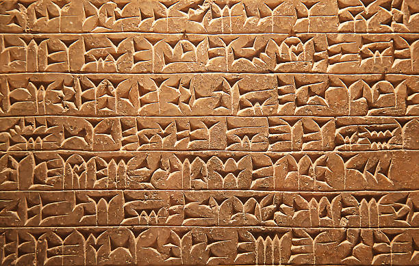
Єгипетське ієрогліфічне письмо
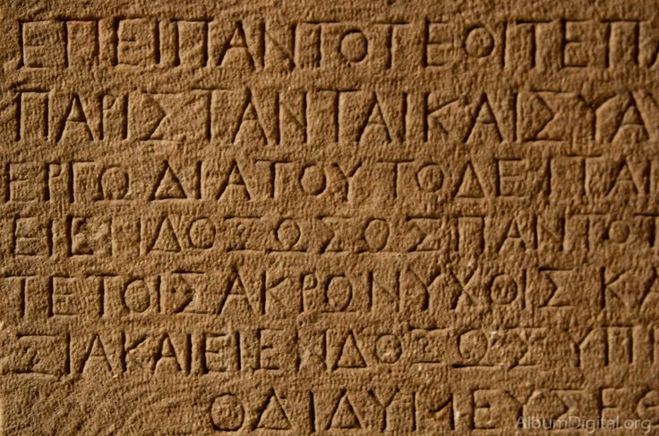
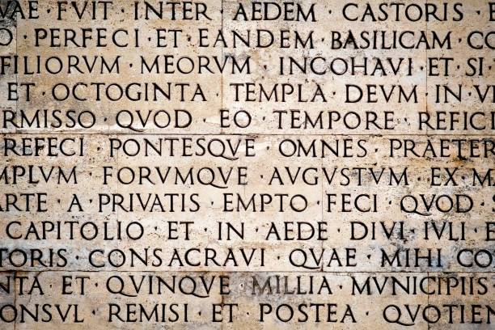
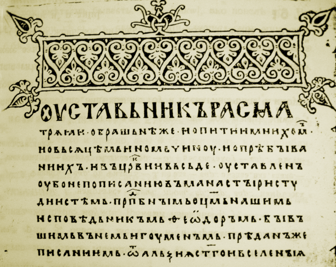
Сьогодні комп’ютери продовжують цю традицію, але вже у власний спосіб — вони кодують дані у двійковій формі, зрозумілій електронним схемам.
Опрацювання даних як інформаційний процес
Опрацювання даних — сукупність операцій, які перетворюють дані з одного виду в інший. Це може бути зміна форми, структури, способу представлення чи навіть смислу даних.
Приклади:
Опрацювання тексту: переклад з однієї мови на іншу, редагування, перевірка граматики.
Опрацювання чисел: обчислення середнього значення, побудова графіка, знаходження розв’язку рівняння.
Опрацювання зображень: зміна роздільної здатності, застосування фільтрів, розпізнавання облич.
Опрацювання звуку: зменшення шумів, стиснення для збереження в mp3.
Головна мета опрацювання даних — перетворити вхідні дані на нову інформацію, яка має практичне значення. Наприклад, з набору чисел температури за день можна обчислити середню температуру за місяць.
Кодування інформації
Кодування — процес перетворення інформації (повідомлень чи даних) у форму, зручну для зберігання, передавання чи обробки.
Ми часто користуємося кодуванням у повсякденному житті. Наприклад, у метро є система кольорів та номерів ліній. Пасажир читає код «червона лінія, станція №3» і розуміє, куди йти. Це не сама інформація (назва місцевості), а її знак-замінник.
Системи символів
Клинопис (Месопотамія) — система знаків у вигляді клиноподібних рисок.
Ієрогліфи (Єгипет, Китай) — складні знаки, що зображують предмети чи ідеї.
Алфавіт — набір букв, які дозволяють записувати необмежену кількість слів.
Системи числення — від римських чисел до сучасної десяткової, що дозволила виконувати складні обчислення.
Сучасні символи: дорожні знаки, піктограми на смартфонах, емодзі.
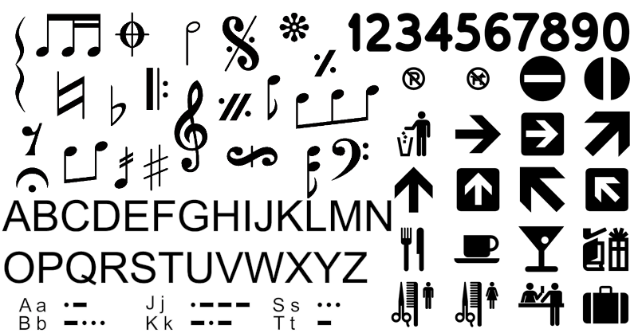
Подання інформації в комп’ютері
Комп’ютер є електронний пристрій, що працює з електричними сигналами, які мають лише два стани: є сигнал / немає сигналу, або «1» і «0». Саме тому основою обчислювальної техніки є двійковий код - це код, який складається з двох знаків «1» і «0»
Текст → кодується у послідовність чисел (наприклад, у таблиці ASCII чи Unicode).
Зображення → подається як набір точок (пікселів), кожна з яких має числове значення кольору.
Звук → представлений як послідовність чисел, що відображають силу коливань у певні моменти часу.
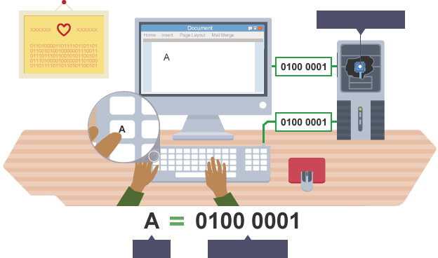
Кодування та декодування повідомлень
Кодування - процес перетворення початкового повідомлення у форму, зручну для передачі або обробки.
Слово «привіт» у комп’ютері перетворюється на послідовність чисел, а далі — на двійковий код.
У транспорті номер маршруту «24» кодує цілу інформацію: початкову та кінцеву зупинки, шлях руху.
Декодування - зворотний процес. Машина чи людина читає код і відновлює початкове повідомлення.
Комп’ютер зчитує двійкові числа й відображає їх як букви чи зображення.
Пасажир читає номер автобуса і розуміє, куди він поїде.
Шифри
Особливий різновид кодування — це шифрування, що використовується для захисту інформації.
Шифр Цезаря: кожна літера замінюється іншою, що стоїть на кілька позицій далі в алфавіті. Спробувати можна тут: https://ed-info.github.io/cccode
Анаграми: переставляння літер у словах.
Сучасні шифри: складні математичні алгоритми, які захищають банківські операції чи листування в месенджерах.
 | Практична робота |
Запишіть слово «КОД» у вигляді кодів Unicode (наприклад: К — U+041A, О — U+041E, Т — U+0414).
Представте ці коди у двійковій системі числення.
Виконайте просте шифрування Цезаря для слова «СОНЦЕ» зі зсувом на 2 позиції.
Відновіть (декодуйте) повідомлення: «УРЙДЖ» (слово «СОНЦЕ», зашифроване шифром Цезаря зі зсувом 2).

Кодування та декодування — фундаментальні процеси, без яких неможливе існування сучасних інформаційних технологій. Вони дозволяють представити повідомлення у вигляді символів чи сигналів, які можна зберігати, передавати, обробляти та захищати. Історичні системи символів дали поштовх до створення сучасних кодів, а шифри доводять, що кодування має не лише технічне, а й культурне та безпекове значення.
Підсумки |
Опрацювання даних — це інформаційний процес перетворення даних у нову інформацію.
Кодування — спосіб представлення даних у вигляді символів чи сигналів.
Людство створювало системи символів від клинопису до алфавітів і числення.
У комп’ютерах інформація подається двійковим кодом.
Декодування — це зворотне перетворення кодів у зрозумілу форму.
Шифри забезпечують захист даних.
 | Контрольні запитання |
Що таке опрацювання даних?
Які історичні системи символів вам відомі?
Чому комп’ютери використовують двійковий код?
Що таке кодування і що таке декодування?
Чим відрізняється звичайне кодування від шифрування?
 | Вправи |
Наведіть три приклади кодування інформації в повсякденному житті.
Перекладіть слово «ІНФОРМАЦІЯ» у коди Unicode.
Запишіть будь-яке коротке речення у вигляді двійкового коду (через ASCII/Unicode таблицю).
Зашифруйте слово «ДАНІ» шифром Цезаря зі зсувом 3.
Розробіть власний простий шифр для передачі секретного повідомлення і дайте його розгадати однокласникам.
Інформація — це сучасний скарб, а кодування — ключ до нього.
Представлення та опрацювання даних різних типів (числа, текст, звуки, зображення) у двійковому та інших видах кодування
 | Про що ми дізнаємось? Як комп’ютери представляють різні види інформації у двійковій формі та які існують методи кодування чисел, тексту, зображень і звуків. |
 | Що ми зможемо робити? Перетворювати числа між десятковою та двійковою системами, розуміти принципи кодування символів у таблицях ASCII та Unicode, пояснювати, як кодуються кольори у зображеннях, аналізувати параметри кодування звуку |
 | Чому це важливо? Комп’ютери працюють виключно з двійковим кодом, тому знання принципів кодування даних дозволяє зрозуміти, як працюють програми, файли, мережі та будь-які цифрові пристрої.. |
Ми вже знаємо, що комп’ютер розуміє лише двійковий код. Але як саме у цей код перетворюються такі різні види інформації, як числа, текст, зображення та звуки? Адже ми звикли сприймати їх у звичній для людини формі: бачити літери, чути мелодії, спостерігати кольорові фотографії. Перетворення інформації у послідовність електричних сигналів ефективно опрацьовувати цифрові дані.
Двійкова система числення
У двійковій системі числення використовується лише дві цифри: 0 та 1. Саме вони відповідають фізичному стану електронних елементів: "є струм" / "немає струму".
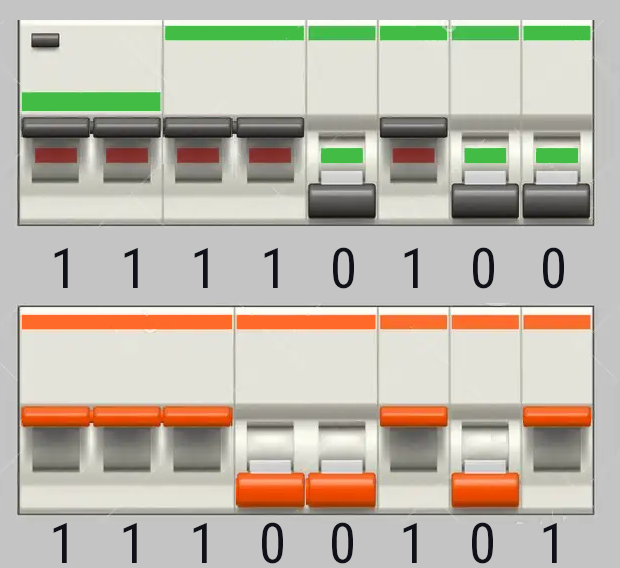
Основи
Десяткова система (наша звична): основа 10, цифри від 0 до 9.
Двійкова система: основа 2, цифри лише 0 і 1.
Кожна позиція в числі відповідає степеню двійки. Наприклад:
10112=1⋅23+0⋅22+1⋅21+1⋅20=1110.
Біт та байт
Біт (binary digit): найменша одиниця інформації (0 або 1).
Байт: 8 бітів. Використовується для кодування одного символу.
Перетворення двійкових чисел у десяткові
Кожна цифра двійкового числа відповідає степеню числа 2. Праворуч — найменший розряд (2⁰), далі — 2¹, 2², 2³ і так далі.
Алгоритм
Записати число у двійковій формі.
Пронумерувати розряди з права наліво, починаючи з нуля.
Помножити кожну цифру на відповідний степінь двійки.
Додати всі отримані результати.
Приклади
10112:
1⋅23=8
0⋅22=0
1⋅21=2
1⋅20=1
Разом: 8+0+2+1=1110.
110012:
1⋅24=16
1⋅23=8
0⋅22=0
0⋅21=0
1⋅20=1
Разом: 16+8+0+0+1=2510.
Перетворення десяткових чисел у двійкові
Використовуємо метод ділення з остачею - число ділимо на 2, записуємо остачу. Потім ділимо результат на 2 доти, поки не отримаємо нуль. Остачі читаємо знизу вверх.
Алгоритм
Поділити число на 2.
Записати остачу (0 або 1).
Поділити результат знову на 2.
Повторювати, поки частка не стане 0.
Записати остачі у зворотному порядку.
Приклади
1310:
13 : 2 = 6, остача 1
6 : 2 = 3, остача 0
3 : 2 = 1, остача 1
1 : 2 = 0, остача 1
Остачі знизу вверх = 1101₂.
4510:
45 : 2 = 22, остача 1
22 : 2 = 11, остача 0
11 : 2 = 5, остача 1
5 : 2 = 2, остача 1
2 : 2 = 1, остача 0
1 : 2 = 0, остача 1
Остачі знизу вверх = 101101₂.
Приклади
Десяткове число | Двійкове число |
5 | 101 |
10 | 1010 |
25 | 11001 |
45 | 101101 |
127 | 1111111 |
2025 | 11111101001 |
Таким чином, будь-які числові дані можуть бути подані послідовністю нулів і одиниць.
Кодування текстових даних
Кожен символ (літера, цифра, розділовий знак) має свій числовий код, який у пам’яті комп’ютера записується двійковою послідовністю.
Таблиці кодування
ASCII (American Standard Code for Information Interchange):
Використовує 7 бітів (128 символів).
Підтримує англійські літери, цифри, деякі знаки.
Приклад: літера A має код 65 (01000001 у двійковому).
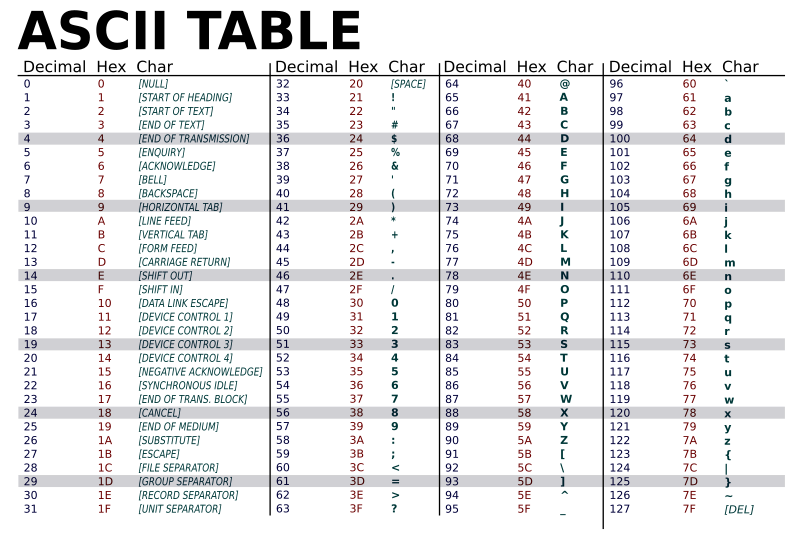
Розширений стандарт, що охоплює всі мови світу.
Може кодувати понад 1 мільйон символів.
Використовує різні схеми зберігання: UTF-8, UTF-16, UTF-32.
Завдяки Unicode українські літери (ї, є, ґ, і) теж мають свої коди.
Приклад
Слово "Привіт" у Unicode (UTF-8) зберігається як послідовність байтів, кожен з яких відповідає певній літері.
Кодування графічних даних (зображення)
Зображення складається з пікселів — маленьких кольорових точок. Кожен піксель має свій числовий код, що визначає колір.
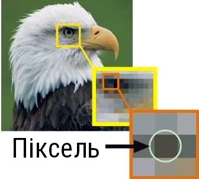
Колірні моделі
RGB (Red, Green, Blue):
Використовується на екранах. Кожен колір описується трьома числами (0–255), які визначають інтенсивність червоного, зеленого та синього.
Наприклад:
Білий = (255, 255, 255)
Чорний = (0, 0, 0)
Яскраво-червоний = (255, 0, 0)
CMYK (Cyan, Magenta, Yellow, blacK):
Використовується для друку.
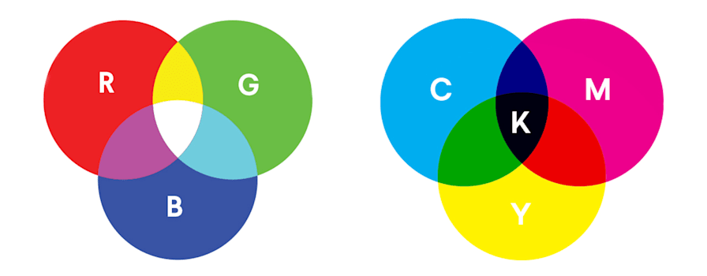
Формати файлів
BMP: простий формат без стиснення.
JPEG: стиснення з втратами, зменшує розмір фотографій.
PNG: стиснення без втрат, підтримка прозорості.
GIF: може зберігати анімації, обмежена кількість кольорів.
Таким чином, комп’ютерні зображення — це таблиця чисел, кожне з яких відповідає кольору пікселя.
Кодування звукових даних
Звук — це хвиля, тобто коливання повітря. Для перетворення звуку в цифрову форму використовують дискретизацію.
Дискретизація
Звук вимірюється через певні проміжки часу (частота дискретизації).
Кожне значення округлюється до найближчого числа, яке зберігається у вигляді двійкового коду.
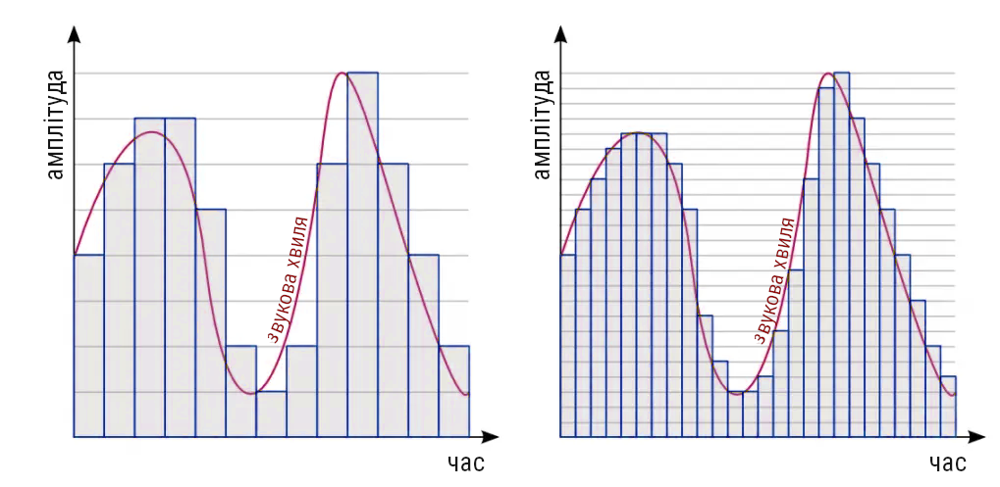
Характеристики
Частота дискретизації (Hz):
CD-якість = 44,1 кГц (44100 вимірювань за секунду).
Чим вища частота, тим точніше звук.
Глибина кодування (бітність):
8 бітів = 256 рівнів гучності.
16 бітів = 65 536 рівнів (вища якість).
Формати
WAV: зберігає звук без стиснення.
MP3: стиснення з втратами, маленький розмір файлів.
FLAC: стиснення без втрат, висока якість.
 | Практична робота |
Перевести числа з десяткової у двійкову:
25 = ?
127 = ?
2025 = ?
Визначити двійковий код символів А, Б, C у таблиці Unicode.
Відкрити будь-яке зображення у програмі-редакторі та зменшити його розмір, порівнявши формати JPEG і PNG.
Записати свій голос у форматах WAV і MP3 та порівняти якість і розмір файлу.
Незалежно від того, чи ми працюємо з числами, текстом, зображенням або звуком, комп’ютер завжди зберігає їх у вигляді двійкового коду. Системи кодування забезпечують зручність зберігання, передачі та опрацювання даних. Це дозволяє комп’ютеру "говорити однією мовою" з усіма видами інформації.
 | Підсумки |
Усі дані в комп’ютері подаються у вигляді нулів і одиниць.
Числа перетворюються за правилами двійкової системи.
Текст кодується за допомогою таблиць ASCII або Unicode.
Зображення — це набір пікселів у певній колірній моделі.
Звук кодується шляхом дискретизації та зберігається у форматах WAV, MP3, FLAC тощо.
Контрольні запитання |
Що таке біт і байт?
У чому полягає різниця між ASCII та Unicode?
Як у моделі RGB задається колір?
Що таке частота дискретизації звуку?
Чим відрізняється формат JPEG від PNG?
 | Вправи |
Перевірте власні знання двійкового кодування тут: https://learningcontent.cisco.com/games/binary/index.html
Перевести число 45 у двійкову систему.
Записати у вигляді двійкового коду слово "Код".
Визначити кількість пікселів у зображенні розміром 1920×1080.
Порівняти розмір одного й того ж зображення у форматах BMP, JPEG і PNG.
Визначити, яку глибину кодування має CD-звук.
Файл — не просто набір нулів і одиниць,
а спосіб упорядкувати інформацію так, щоб вона залишалась зрозумілою і оступною.

Формати файлів даних для збереження об'єктів різних типів

 | Про що ми дізнаємось? Ми розглянемо, що таке формат файлу, чим він відрізняється від простої послідовності байтів, які існують формати для тексту, зображень, звуку, відео, а також навчимось відрізняти їх за розширенням імені файлу. |
 | Що ми зможемо робити? Пояснювати, що таке формат файлу та для чого він потрібен. розрізняти найпоширеніші формати для різних типів даних та обирати оптимальний формат залежно від завдання (наприклад, PNG чи JPEG для зображень) |
Чому це важливо? Знання про формати файлів дозволяє грамотно зберігати, передавати та використовувати інформацію, адже якщо вибрати неправильний формат, можна втратити якість, витратити зайве місце на диску чи навіть не відкрити файл на іншому пристрої. | |
Ми вже знаємо, як різні типи даних кодуються у двійковий вигляд. Але закодовані числа, текст чи зображення ще потрібно впорядкувати в певну структуру, щоб комп’ютер "розумів", що це за дані та як з ними працювати. Саме для цього існують формати файлів. Вони визначають, яким чином організовані біти і байти у файлі, як відокремлюється службова інформація від основного вмісту, і як програма має інтерпретувати ці дані.
Що таке формат файлу?
Формат файлу — спосіб організації та структури даних у файлі, який визначає правила, за якими закодована інформація зберігається та обробляється.
Наприклад, якщо ми відкриємо один і той самий набір бітів у текстовому редакторі та у програмі для перегляду зображень, результат буде різним. Причина в тому, що кожна програма очікує певний формат.
Розширення імені файлу
Формат зазвичай позначається розширенням — кількома символами після крапки в назві файлу:
document.txt → звичайний текстовий файл;
photo.jpg → фотографія у форматі JPEG;
song.mp3 → музичний файл.
Проте варто пам’ятати: розширення саме по собі не гарантує, що файл дійсно має вказаний формат. Бувають випадки, коли файл перейменовують, але його структура залишається іншою. Тому програми зазвичай перевіряють "сигнатуру" файлу — службові байти на початку.
Формати для різних типів даних
1. Текстові формати
TXT (.txt)
Найпростіший формат, що зберігає лише символи без оформлення. Використовується для нотаток, програмних кодів, конфігураційних файлів.
Перевага: простота і мінімальний розмір.
Недолік: немає підтримки форматування (шрифт, колір, таблиці).
DOCX (.docx)
Формат текстових документів Microsoft Word. Насправді це архів ZIP, у якому зберігається текст, стилі, зображення, таблиці у вигляді XML-файлів.
Перевага: підтримка складного форматування.
Недолік: залежність від спеціальних програм.
PDF (.pdf)
Створений компанією Adobe для збереження документа в незмінному вигляді. PDF-файл виглядає однаково на будь-якому пристрої.
Перевага: сумісність, точна передача вигляду документа.
Недолік: важче редагувати.
2. Графічні формати
JPEG (.jpg)
Найпопулярніший для фотографій. Використовує стиснення з втратами: частина непомітних деталей видаляється, що зменшує розмір.
Перевага: невеликий розмір.
Недолік: кожне повторне збереження погіршує якість.
PNG (.png)
Стиснення без втрат, підтримка прозорості. Часто використовується у веб-дизайні.
Перевага: ідеально для іконок, схем, логотипів.
Недолік: більший розмір за JPEG.
GIF (.gif)
Старий формат, який підтримує анімацію. Має обмеження у 256 кольорів.
Перевага: можливість зберігати прості анімації.
Недолік: низька якість фото.
3. Звукові формати
MP3 (.mp3)
Використовує стиснення з втратами. Алгоритм видаляє ті звуки, які людське вухо майже не чує.
Перевага: значно менший розмір файлу.
Недолік: втрата частини якості.
WAV (.wav)
Формат без стиснення, кожна хвиля звуку зберігається у сирому вигляді.
Перевага: висока якість.
Недолік: дуже великі файли.
FLAC (.flac)
Стиснення без втрат. Якість як у WAV, але розмір менший.
4. Відеоформати
MP4 (.mp4)
Сучасний стандарт, який може містити відео, звук, субтитри.
Перевага: баланс між якістю та розміром.
Недолік: складна структура.
AVI (.avi)
Один із найстаріших форматів. Підтримує різні кодеки.
Перевага: простота.
Недолік: великі розміри.

Формати файлів — це основа сучасних інформаційних технологій. Від них залежить, як ефективно зберігатимуться дані, чи можна буде їх відкрити на іншому пристрої, і наскільки швидко їх можна передати. Вибір правильного формату — це не лише питання зручності, але й економії ресурсів.
 | Практична робота |
Створіть у текстовому редакторі файл hello.txt з фразою "Привіт, світ!".
Збережіть цей самий текст у форматі .docx і .pdf. Порівняйте розмір файлів.
Завантажте фотографію і збережіть її у форматах .jpg та .png. Порівняйте якість та розмір.
 | Підсумки |
Формат файлу — це спосіб організації даних.
Один і той самий тип інформації можна зберігати у різних форматах.
Є формати зі стисненням з втратами (JPEG, MP3) та без втрат (PNG, FLAC).
 | Контрольні запитання |
Що таке формат файлу?
Яку роль відіграє розширення у назві файлу?
Чим відрізняється JPEG від PNG?
Чому MP3-файли менші за WAV-файли?
Вправи |
Визначте формати файлів, що використовуються у вашому телефоні для фотографій, музики та відео.
Спробуйте відкрити файл .jpg у текстовому редакторі. Що ви побачите?
Підберіть формат для таких випадків:
збереження книги для друку;
логотип для сайту з прозорим фоном;
запис лекції у високій якості;
пересилання кількох файлів електронною поштою.
Ефективність роботи з інформацією залежить від того,
як ми зберігаємо й передаємо дані.

Стиснення та архівування даних. Види стиснення даних

 | Про що ми дізнаємось? Що таке стиснення даних і які його види, які формати стиснення застосовуються для різних типів файлів, як відбувається архівація даних та для чого вона потрібна. |
Що ми зможемо робити? Пояснювати відмінності між стисненням із втратами та без втрат, користуватися архіваторами для створення, розпаковування й редагування архівів, вибирати оптимальний формат для збереження різних типів даних, виконувати резервне копіювання та відновлення інформації. | |
 | Чому це важливо? Сучасний світ щодня генерує мільярди гігабайтів даних, і для того щоб ефективно зберігати й передавати таку кількість інформації, потрібно вміти зменшувати її обсяг. Стиснення та архівування — це навички, які допомагають економити час, пам’ять і ресурси, а також забезпечують захист і збереження наших файлів.. |
Ми вже знаємо, що будь-які дані в комп’ютері зберігаються у вигляді двійкового коду. Чим більше інформації містить файл, тим більше бітів він займає у пам’яті, але іноді обсяг файлів стає настільки великим, що їх важко пересилати електронною поштою, зберігати на флешці чи завантажувати з інтернету.
Щоб вирішити цю проблему, застосовують стиснення даних.
Стиснення даних
Стиснення (компресія) даних — процес перетворення інформації з метою зменшення її обсягу.
Мета стиснення:
економія місця на носіях;
прискорення передавання даних мережею;
зручність зберігання та резервного копіювання.
Чому це можливо?
Надлишковість даних: у більшості файлів є зайві повтори.
Наприклад, слово “привіт” у тексті може траплятися сотні разів.
У зображеннях однакові кольорові пікселі часто йдуть підряд.
У звукових файлах є повторювані хвилі.
Однакова довжина коду: у звичайному кодуванні (наприклад, ASCII чи Unicode) кожен символ має 8 або більше бітів. Але буква “о” може траплятися у текстах набагато частіше, ніж рідкісна “ї”. Чи обов’язково кодувати їх однаково довгими кодами? Ні! Часті символи можна кодувати коротшими кодами, а рідкісні — довшими.
Саме на цьому й будуються методи стиснення.
Види стиснення даних
1. Стиснення без втрат (lossless compression)
Принцип: після відновлення дані виглядають абсолютно так само, як і до стиснення. Жоден біт не губиться.
Де застосовується: тексти, програми, бази даних, фінансові документи. Тут навіть найменша втрата інформації може призвести до серйозних помилок.
Приклади форматів: ZIP, RAR, 7Z, GZIP; PNG — для зображень; FLAC — для музики.
Аналогія: це як пакування речей у валізу. Усі речі залишаються цілими, просто вони займають менше місця.
2. Стиснення з втратами (lossy compression)
Принцип: частина даних видаляється, а відновлений файл лише наближений до початкового.
Де застосовується: мультимедійні файли — фото, музика, відео. Людське око чи вухо не помічають незначних змін якості.
Приклади форматів: JPEG — для зображень, MP3 — для аудіо, MPEG — для відео.
Аналогія: це як художник, що знімає непотрібні деталі з картини, залишаючи лише головне.
Методи стиснення без втрат
Метод RLE (Run-Length Encoding, кодування довжин серій)
Це один із найпростіших алгоритмів, який полягає у заміні серії однакових символів (бітів, байтів, пікселів) коротким записом.
Приклад (текст):
ааааабббвввввв
Можна закодувати як:
5а3б6в
Приклад (зображення):
У чорно-білому малюнку довга смуга з білих пікселів може бути записана як “120 білих” замість 120 окремих точок.
Переваги: простота, ефективність для даних із великою кількістю повторів.
Недоліки: не працює добре з випадковими даними (файл може навіть збільшитися).
Метод Гаффмана (Huffman Coding)
Алгоритм, проаналізувавши надані дані, створює нову таблицю кодів так, що часті символи мають коротші коди, а рідкісні — довші.
Приклад (спрощено):
У тексті частота символів:
А — 50, Б — 20, В — 15, Г — 15
Алгоритм дає коди:
А = 0
Б = 10
В = 110
Г = 111
Отже, найбільш уживана літера кодується всього 1 бітом, а рідкісні — трьома.
Це дає значну економію місця.
Метод LZW (Lempel–Ziv–Welch)
Цей метод будує словник повторюваних фрагментів.
Приклад:
У тексті часто зустрічається “http://”. LZW замінює його на короткий код, наприклад, #12.
У GIF-зображеннях та архівах ZIP саме цей принцип використовується дуже активно.
Архівація даних
Архівація — процес об’єднання одного чи кількох файлів в єдиний архівний файл, зазвичай зі стисненням.
Архівацію файлів здійснюють для:
зручного пересилання великої кількості файлів (наприклад, цілого проєкту чи теки з фотографіями);
економії місця;
організації даних у єдину структуру;
можливості захисту архіву паролем.
Програмне забезпечення.
Для створення архівів застосовують спеціальні програми — архіватори: WinZip, PeaZip. Вбудовані архіватори є також у Windows, macOS і Linux.
Формати архівів:
.zip — один із найпоширеніших;
.rar — популярний завдяки гарному стисненню;
.7z — сучасний формат із високим рівнем компресії;
.tar.gz — часто використовується в Linux.
Стиснення, архівування та резервне копіювання
Важливо відрізняти архівацію від резервного копіювання.
Архівування створює компактні файли для зберігання чи передачі.
Резервне копіювання — це процес створення копій даних, щоб їх можна було відновити після втрати.
Резервні копії можуть зберігатися:
на зовнішньому диску;
у хмарному сховищі (Google Drive, Dropbox, OneDrive);
на сервері.
Відновлення даних дозволяє повернути втрачені або пошкоджені файли після збою системи чи вірусної атаки.
 | Практична робота |
Завдання: «Створюємо архів»
Виберіть кілька файлів (наприклад, теку з фотографіями).
За допомогою архіватора створіть архів у форматі ZIP.
Порівняйте обсяг початкової теки та архіву.
Спробуйте додати пароль для захисту архіву.
Розпакуйте архів і перевірте, чи всі файли відновилися.
 | Підсумки |
Стиснення даних — це спосіб зменшення обсягу інформації для економії місця та пришвидшення передавання.
Існують два види стиснення: без втрат і з втратами.
Архівація допомагає зберігати та передавати багато файлів у компактному вигляді.
Архіватори підтримують різні формати (.zip, .rar, .7z тощо).
Резервне копіювання та відновлення даних — це запорука безпеки важливої інформації.
 | Контрольні запитання |
Що таке стиснення даних?
У чому відмінність між стисненням без втрат і з втратами?
Які формати файлів використовуються для кожного з видів стиснення?
Для чого потрібна архівація даних?
Які є типи архівних файлів?
Чим архівування відрізняється від резервного копіювання?
Наведіть приклади програм-архіваторів.
 | Вправи |
Стисніть текстовий документ у форматі ZIP і визначте, наскільки зменшився його обсяг.
Завантажте одну й ту саму фотографію у форматах JPEG та PNG. Порівняйте розмір файлів. Зробіть висновок.
Підготуйте архів із кількох файлів і встановіть на нього пароль. Спробуйте відкрити архів на іншому комп’ютері.
Створіть резервну копію особистих файлів на флешці або в хмарному сховищі.
Складіть схему, яка показує, де у вашому навчальному чи домашньому середовищі доцільно використовувати стиснення без втрат, а де — із втратами.
Архівація — мистецтво навести лад у своєму цифровому житті:
завдяки стисненню ми економимо місце, завдяки архівам — час.

Архіватори. Типи архівних файлів. Операції над архівами

Про що ми дізнаємось? Що таке архіватор і для чого він потрібен, які бувають формати архівних файлів, як створювати, розпаковувати, змінювати та захищати архіви і як працювати з архівами за допомогою програми PeaZip. | |
 | Що ми зможемо робити? Створювати архіви у різних форматах (ZIP, 7z тощо), додавати та вилучати файли з архіву, захищати архів паролем, тестувати архіви на наявність помилок, розділяти великі архіви на частини, відновлювати дані з архіву. |
 | Чому це важливо? Архівування — це не лише компактність, але й зручність організації даних. Крім того, архіви допомагають економити місце, захищати інформацію від сторонніх і швидше передавати її мережею. |
Ми вже знаємо, що стиснення та архівування допомагають нам заощаджувати місце та час. Тепер давайте детальніше розглянемо, за допомогою яких програм це відбувається та які операції ми можемо з ними виконувати.
Що таке архіватор?
Архіватор — спеціальна комп’ютерна програма, призначена для створення архівних файлів (архівів), а також для керування ними.
Основні можливості архіваторів:
об’єднати один або декілька файлів в єдиний архівний файл;
зменшити обсяг даних за допомогою алгоритмів стиснення;
забезпечити зручність зберігання та передачі інформації.
Популярні архіватори:
WinZip — один з найстаріших і найвідоміших архіваторів. Він підтримує широкий спектр форматів, інтегрується з хмарними сховищами та має простий інтерфейс.
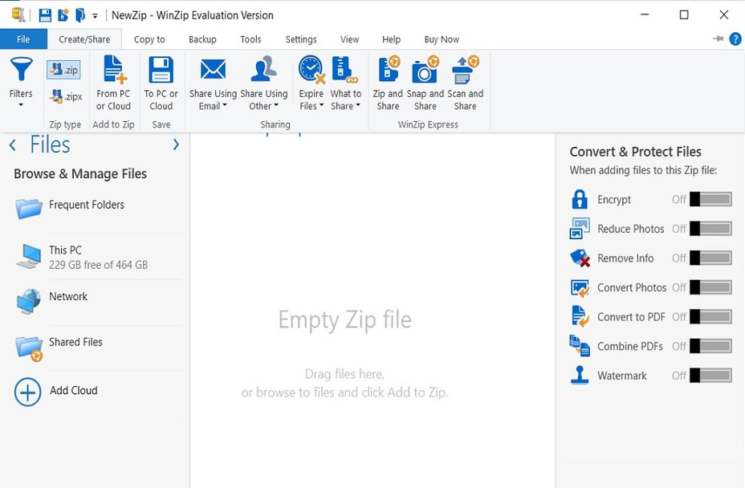
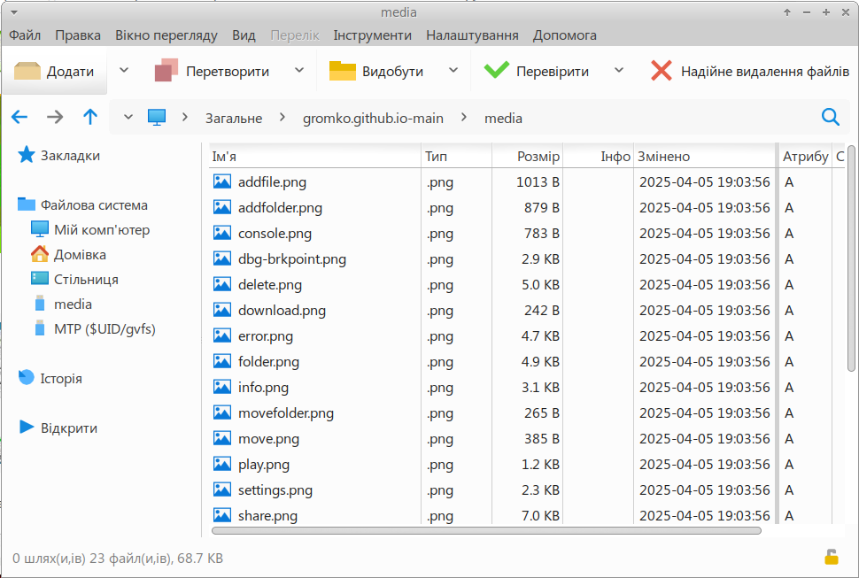
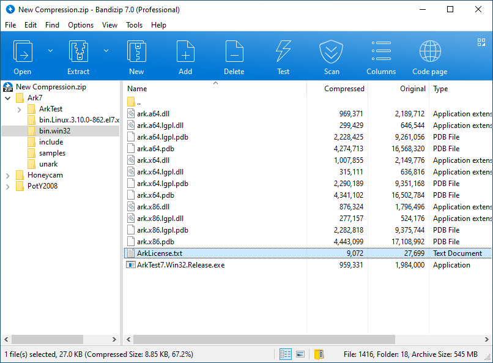
B1 online archiver - онлайновий архіватор(http://b1.org/)
У подальшому ми розглядатимемо приклади роботи з програмою PeaZip, оскільки вона безкоштовна і доступна для всіх користувачів.
Типи архівних файлів
Формат архіву визначає спосіб, у який дані зберігаються всередині. Найвідоміші формати:
ZIP (.zip)
Найстаріший і найбільш поширений формат. Підтримується майже всіма архіваторами. Добре підходить для загальних завдань.
RAR (.rar)
В окремих випадках може надати краще стиснення, ніж ZIP, але підтримується не всіма програмами.
7z (.7z)
Дає високу ефективність стиснення, підтримує сучасні алгоритми, дозволяє ставити сильний захист паролем.
GZ (.gz) та TAR (.tar) — популярні у світі Linux.
ISO (.iso) — образи дисків.
XZ (.xz) — сучасний формат для високого стиснення.
Основні операції над архівами
Робота з архівами складається з кількох основних дій. Розглянемо їх на прикладі PeaZip.
1. Створення архіву
Запустіть програму PeaZip.
Виділіть потрібні файли.
Натисніть Додати.
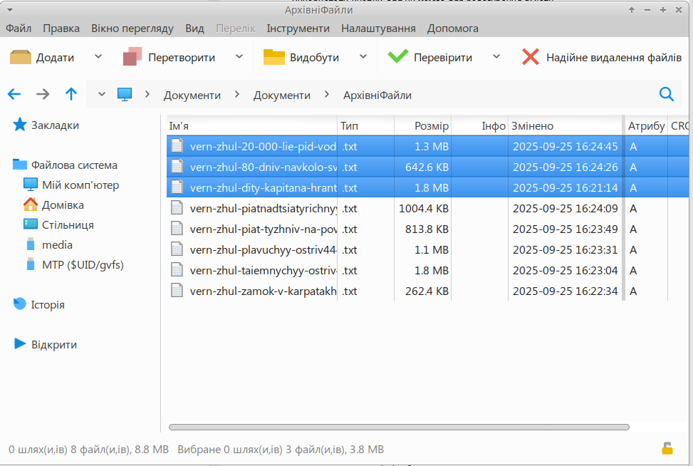
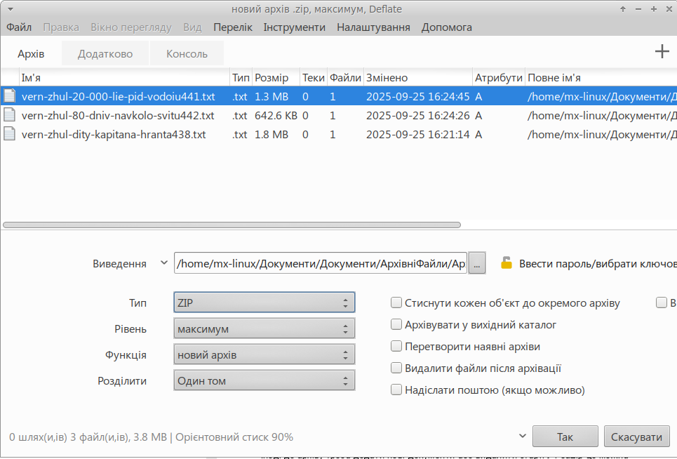
За бажанням оберіть ступінь стиснення ("fast", "normal", "ultra").
Натисніть Так.
У результаті утвориться архівний файл, який можна зручно зберігати чи пересилати.
2. Додавання та видалення файлів
Іноді до архіву треба додати нові документи або видалити старі. У PeaZip це можна зробити так:
Відкрити архів у вікні програми.
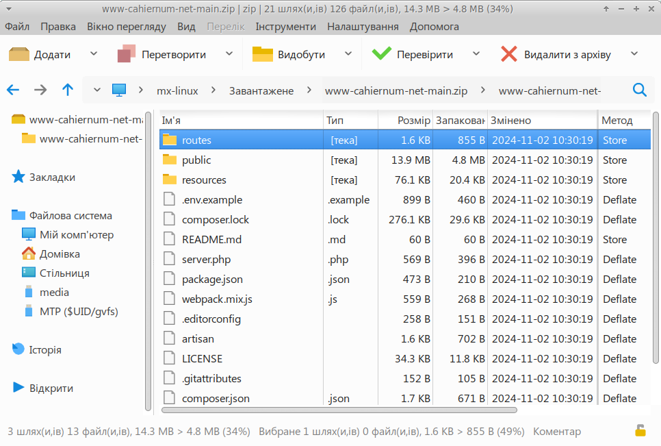
3. Розпакування (розпаковування) архіву
Відкрийте архів у PeaZip.
Натисніть кнопку Видобути.
Виберіть теку, куди розпаковуватимуться файли.
Після підтвердження дані знову будуть у початковому вигляді.
4. Тестування архіву
Архів може пошкодитися при передачі або копіюванні. PeaZip має функцію Перевірити, яка перевіряє архів на помилки. Якщо все добре, програма повідомить "Everything is Ok".
5. Розбиття архіву на частини
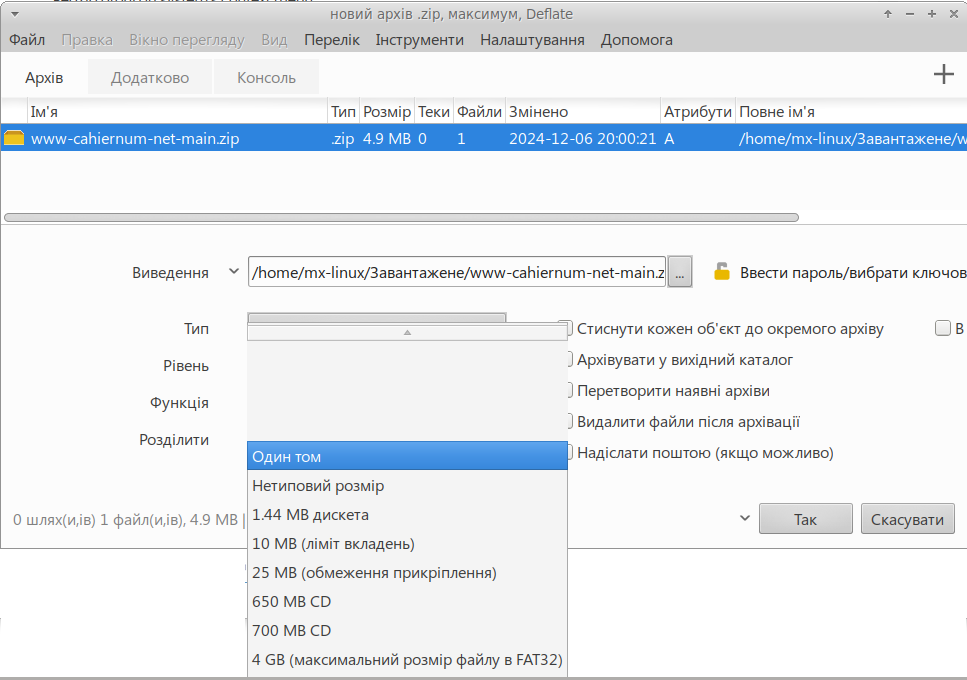
6. Захист архіву паролем
Для конфіденційних даних можна встановити пароль:
У вікні створення архіву активуйте параметр Ввести пароль.
Введіть пароль.
Тепер відкрити архів можна буде тільки після введення правильного пароля.
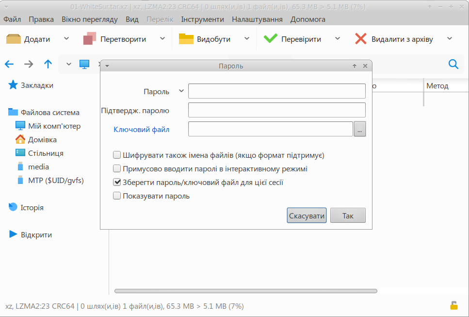
 | Практична робота |
Завдання: Робота з архівами у програмі PeaZip
Завантажте та встановіть PeaZip з офіційного сайту.
Створіть у себе на комп’ютері теку MyArchive та помістіть у неї кілька текстових документів і зображень.
За допомогою PeaZip створіть архів у форматі ZIP.
Створіть інший архів у форматі 7z з високим рівнем стиснення. Порівняйте розміри обох архівів.
Додайте новий файл у архів і перевірте, чи він з’явився всередині.
Видаліть один із файлів з архіву.
Захистіть архів паролем. Спробуйте відкрити його без пароля — чи вдалося?
Розбийте архів на частини по 10 МБ. Подивіться, як виглядають отримані файли.
Використайте функцію Перевірити і переконайтеся, що архів справний.
Розпакуйте архів назад у теку і порівняйте файли з оригіналом.

Архіватори — це необхідний інструмент для кожного користувача комп’ютера. Вони допомагають компактно зберігати інформацію, швидко передавати її, організовувати файли у зручний вигляд та захищати дані від сторонніх. Використання програм, таких як PeaZip, робить роботу з архівами простою і доступною навіть для новачків.
 | Підсумки |
Архіватор — програма для створення й обробки архівних файлів.
Основні формати архівів: ZIP, RAR, 7z, TAR, GZ, ISO.
Основні операції над архівами: створення, додавання, видалення, розпакування, тестування, розбиття, захист паролем.
PeaZip — зручний безкоштовний архіватор, що підтримує всі ці можливості.
 | Контрольні запитання |
Що таке архіватор і для чого він потрібен?
Назвіть три найпоширеніші формати архівних файлів.
Чим відрізняються формати ZIP і 7z?
Для чого використовується функція тестування архіву?
Чому важливо захищати архіви паролем?
 | Вправи |
Стисніть 10 зображень у форматі ZIP. Порівняйте розмір архіву з сумою розмірів оригінальних файлів.
Створіть архів у форматі 7z та порівняйте його розмір із ZIP-архівом. Який виявився меншим?
Додайте у вже створений архів новий документ і перевірте, чи він з’явився всередині.
Видаліть файл з архіву і розпакуйте архів. Чи залишився цей файл на комп’ютері?
Створіть архів, захищений паролем. Дайте його однокласнику. Чи зможе він відкрити архів без пароля?
Розбийте великий архів на частини й спробуйте з’єднати їх назад.
Використайте функцію Перевірити у PeaZip і поясніть, навіщо вона потрібна.
Найнадійніший спосіб захистити дані —
зробити їхню копію ще до того, як вони зникнуть.

Резервне копіювання даних. Відновлення даних

 | Про що ми дізнаємось? Що таке резервне копіювання та відновлення даних, які існують види резервного копіювання та які інструменти допомагають організувати захист даних. |
 | Що ми зможемо робити? Створювати резервні копії важливих документів, фото, відео та інших файлів, використовувати як зовнішні носії, так і хмарні сервіси для збереження даних та відновлювати втрачену інформацію з резервних копій. |
 | Чому це важливо? Втрата даних може завдати непоправної шкоди: від втрати унікальних фото до зупинки роботи цілих організацій, адже у сучасному світі дані — це цінність, яка часто більше, ніж сам пристрій. |
Ми вже знаємо, як стискати та архівувати файли, щоб економити місце. Але що робити, якщо жорсткий диск вийде з ладу, файли будуть випадково видалені або заражені вірусом? У таких випадках на допомогу приходить резервне копіювання. Це один із найважливіших інструментів захисту інформації, який можна вважати своєрідною «страховкою» для наших цифрових активів.
Що таке резервне копіювання?
Резервне копіювання (backup) — процес створення копій даних з метою їх збереження на випадок втрати або пошкодження оригінальних файлів.
Чому це важливо?
Захист від випадкового видалення. Якщо ви помилково видалили документ, резервна копія допоможе швидко його повернути.
Захист від пошкоджень. Жорсткі диски можуть ламатися, флешки виходити з ладу, а віруси шифрувати файли. Наявність копій дає шанс уникнути катастрофи.
Захист від крадіжки. Навіть якщо пристрій викрадено, ваші дані не зникнуть, якщо копія збережена в іншому місці.
Способи резервного копіювання
1. Внутрішнє та зовнішнє сховище
Внутрішнє копіювання: створення копій на іншому розділі жорсткого диска. Це зручно, але небезпечно, адже поломка диска призведе до втрати і оригіналу, і копії.
Зовнішнє копіювання: використання зовнішніх носіїв (флеш-пам’ять, зовнішні HDD/SSD, DVD). Такий спосіб більш безпечний, адже копія зберігається фізично окремо.
2. Хмарні сховища
Визначення. Це сервіси, які зберігають дані на віддалених серверах у мережі Інтернет.
Переваги.
доступ з будь-якого пристрою;
автоматичне синхронізування файлів;
відсутність потреби у фізичних носіях.
Приклади. Google Диск, Dropbox, OneDrive, iCloud.
3. Архіви як спосіб резервного копіювання
Ще один спосіб створення резервних копій — це архівування. Використовуючи архіватор (наприклад, PeaZip), можна не лише стискати файли, але й створювати спеціальні архіви-копії, які зручно зберігати окремо від комп’ютера.
Відновлення даних
Відновлення даних — процес повернення інформації з резервних копій у її початковий стан.
Як це працює?
Якщо дані втрачено, користувач відкриває резервну копію (наприклад, архів у форматі .zip, .7z чи .tar.gz) і розпаковує потрібні файли назад на комп’ютер.
Якщо використовувались хмарні сервіси, достатньо увійти у свій акаунт і завантажити копію файлів.
Спеціальні програми (Acronis True Image, EaseUS Todo Backup тощо) дозволяють відновлювати копії навіть у повному автоматичному режимі.
Acronis True Image
Практична робота |
Створення резервної копії у вигляді архіву.
Виберіть кілька важливих файлів (наприклад, документи або фото).
Відкрийте PeaZip → натисніть Додати.
Виберіть формат архіву (наприклад, .7z) і ступінь стиснення.
Натисніть OK — буде створено архів-копію.
Збереження архіву на зовнішньому носії.
Скопіюйте створений архів на флешку чи зовнішній HDD.
Переконайтесь, що він відкривається на іншому комп’ютері.
Відновлення файлів із резервної копії.
Запустіть PeaZip → натисніть Видобути.
Виберіть папку, куди потрібно відновити дані.
Переконайтеся, що файли відкриваються так само, як оригінали.

Резервне копіювання — це не додаткова, а базова складова цифрової безпеки. Воно дає змогу зберегти найцінніші дані навіть тоді, коли пристрій виходить з ладу або стає недоступним. Використання архіваторів, зовнішніх носіїв і хмарних сервісів робить цей процес простим і зручним.
 | Підсумки |
Резервне копіювання — це створення копій даних на випадок їх втрати.
Воно захищає від видалення, вірусів, пошкодження пристрою чи крадіжки.
Існують різні методи: внутрішні носії, зовнішні диски, хмарні сховища, архіви.
Відновлення даних здійснюється з резервних копій через архіватори чи спеціальні програми.
Регулярність і надійність — головні принципи правильного резервного копіювання.
 | Контрольні запитання |
Що таке резервне копіювання?
Чим відрізняється внутрішнє резервне копіювання від зовнішнього?
Які переваги мають хмарні сховища?
Як відбувається відновлення даних?
Які операції в PeaZip допомагають у створенні та відновленні резервних копій?
 | Вправи |
Створіть резервну копію теки «Документи» за допомогою PeaZip.
Скопіюйте архів-копію на флешку.
Видаліть один із оригінальних файлів, після чого відновіть його з архіву.
Порівняйте розмір оригінальної теки та архіву — зробіть висновки про ефективність стиснення.
Створіть додаткову копію архіву у хмарному сховищі (Google Диск або OneDrive).